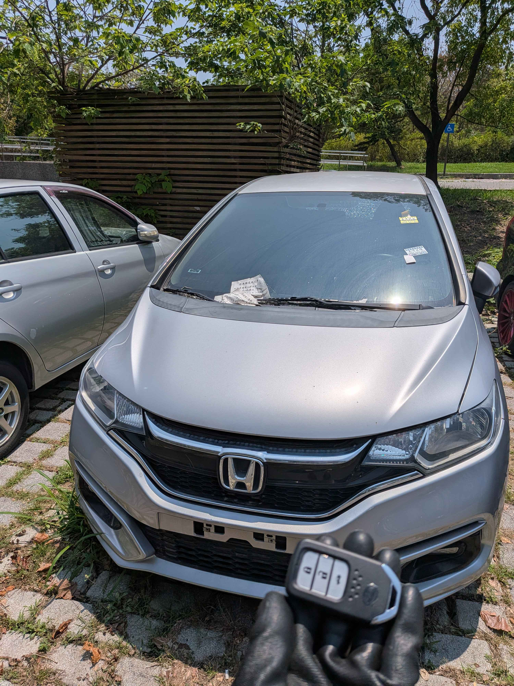

Field Mission Log #20260410
【高雄前鎮】2018 Honda Fit
智能鑰匙全丟現場救援實錄
📍 高雄前鎮區
⚙️ HONDA IMMOBILIZER
⚡ ON-SITE RECOVERY

今日接獲來自高雄前鎮區的緊急委託。一輛停放在戶外停車場的 2018 年式 Honda Fit (第三代小改款)，車主不慎將唯一的智能感應鑰匙遺失，面臨車輛鎖死、無法啟動的困境。
技術挑戰：Honda 防盜系統與戶外高溫作業
2018 年式的 Honda Fit 已全面導入感應式智能鑰匙系統 (Smart Keyless Entry)。當所有鑰匙遺失時，若回原廠處理，通常需要支付高昂的拖吊費用，並面臨數天的待料與系統重設時間。而在炎熱的戶外停車場作業，對技術人員的設備穩定性與效率也是一大考驗。
🏗️
免拖吊服務
行動工作站直接進駐前鎮區停車場，原地安全施作
🛡️
防盜註銷
強制洗掉遺失的舊鑰匙 ID，防止有心人士撿到後開門
⚡
現場發動
匹配全新原廠級智慧鑰匙，Keyless 與一鍵啟動完美復原
救援成果
極致核心團隊抵達現場後，透過 OBD 專用診斷設備，在不拆卸任何車輛模組的情況下，迅速連線至車輛防盜電腦。短短 40 分鐘內，我們便成功為這台 Honda Fit 配製出全新智能鑰匙，並完成舊數據註銷。車主當場即可發動愛車，省下了大量時間與回原廠的昂貴開銷。